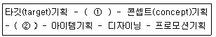
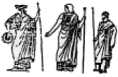
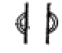
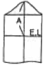
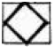

패션디자인산업기사 (2007-03-04 기출문제)
1과목: 피복재료학
1. 다음 중 리그닌을 가장 많이 함유하고 있는 섬유는?
- 폴리에스테르
- 비스코스
- 대마
- 면
(정답률: 알수없음)

2. 다음 중 축합중합에 의하여 얻어지는 섬유는?
- 아크릴로니트릴
- 폴리염화비닐
- 폴리에스테르
- 폴리비닐알코올
(정답률: 알수없음)
3. 축용가공 되지 않은 양모제품에서 회수한 재생모는?
- 노일(noil)
- 멍고(mungo)
- 쇼디(shoddy)
- 스킨 울(skin wool)
(정답률: 알수없음)
4. 섬유의 종류가 다른 두 가지 이상을 섞어 짠 직물 명칭은?
- 혼방직물
- 교직물
- 표백직물
- 가공직물
(정답률: 알수없음)
5. 다음 중 서로 관계가 없는 것은?
- 면-나일론보다 비중이 크다.
- 모-내균성이 약하다.
- 견-내일광성이 좋음
- 편직물-신축성이 좋음
(정답률: 알수없음)
6. 다음 중 실로 만들어진 피륙은?
- 레이스
- 펠트
- 부직포
- 인조피혁
(정답률: 알수없음)
7. 다음 중 견 섬유의 주 성분인 것은?
- Keratone
- Cellulose
- Fiboin
- Sericin
(정답률: 알수없음)
8. 방적사가 필라멘트사에 비해 따뜩한 이유는?
- 강도, 신도가 크기 때문에
- 함기량이 적기 때문에
- 잔털효과 때문에
- 비중이 크기 때문에
(정답률: 알수없음)
9. 다음 중에서 양모가 가장 많이 손상 되는 것은?
- 5% 수산화나트륨 100℃ 용액
- 70% 황산 25℃ 용액
- 100% 아세톤 25℃ 용액
- 35% 염산 25℃ 용액
(정답률: 알수없음)
10. 다음 중 평직물이 아닌 것은?
- 공단
- 광목
- 옥양목
- 포플린
(정답률: 알수없음)
11. 다음 중 가장 좋은 품질의 원면은?
- 한국면
- 중국면
- 이집트면
- 해도면
(정답률: 알수없음)
12. 다음 천연 섬유 중 방적사 원료로 가장 거리가 먼 것은?
- 건섬유
- 양모 섬유
- 면섬유
- 마섬유
(정답률: 알수없음)
13. 레질리언스에 대한 설명 중 틀린 것은?
- 표시는 탄성회복률 또는 탄성률로 표시한다.
- 압축탄성이라고도 한다.
- 카펫에 사용되는 섬유, 침구에 사용되는 솜 등에 밀접한 관계를 가진다.
- 섬유가 외부의 힘에 의하여 굴곡, 압축 등을 받았다가 외부의 힘이 제거되었을 때 본래의 상태로 돌아가는 능력을 말한다.
(정답률: 알수없음)
14. 면 섬유의 특성으로 틀린 것은?
- 습윤 시 강도와 신도가 증가된다.
- 자외선에 취화되어 산화셀룰롤로스로 변한다.
- 산에 의해 하이드로셀룰로스로 변화되기 쉽다.
- 수산화나트륨에 의해 알칼리셀룰로스가 형성되어 용해된다.
(정답률: 알수없음)
15. 섬유의 단면을 설명한 것 중 틀린 것은?
- 섬유의 단면이 원형이면 필링이 잘 생기지만 그 단면이 점차 편평하여짐에 따라 필링의 발생은 감소된다.
- 견 섬유의 단면은 삼각형이다.
- 면은 편평한 단면을 가지고 있어 평면에서 빛의 반사가 커서 피복성이 좋다.
- 섬유의 단면이 원형 또는 원형에 가까우면 촉감이 약간 거칠지만 피복성은 우수하다.
(정답률: 알수없음)
16. 다음 중 재생 섬유가 아닌 것은?
- 나일론
- 비스코스레이온
- 카제인 함유
- 알긴산 섬유
(정답률: 알수없음)
17. 섬유제품에 습윤저항성을 부여하는 가공은?
- 발유가공
- 방미가공
- 발수가공
- 방오가공
(정답률: 알수없음)
18. 다음 중 공정수분율이 가장 큰 섬유는?
- 면
- 견
- 나일론
- 아크릴
(정답률: 알수없음)
19. 실의 굵기를 표시하는 것 중 중량이 일정하고 길이에 따라 굵기가 달라지는 항중식에 해당되지 않은 것은?
- 면 번수
- 소모 번수
- 텍스
- 미터 변수
(정답률: 알수없음)
20. 신징(singeing)이 필요한 섬유 제품은?
- 마
- 면
- 견
- 나일론
(정답률: 알수없음)
2과목: 패션디자인론
21. 스타일화 재료 중 짧은 시간 내에 빨리 그릴 수 있는 장점이 있으며, 색상과 두께가 다양하여 여러 색을 겹쳐 칠해 혼색의 효과를 주는 것은?
- 수채화물감
- 포스터칼라
- 파스텔
- 마카
(정답률: 알수없음)
22. 리듬의 종류 중 강약의 성격이 있어 변화성이 있고 부드러운 분위기를 느낄 수 있는 것은?
- 전환 리듬
- 교체 리듬
- 방사선 리듬
- 점진적 리듬
(정답률: 알수없음)
23. 패션 디자인의 경제 개념은 무엇을 말하는 것인가?
- 가능한 싸게 만드는 것
- 옷감은 싸고 대신 장식을 많이 하는 것
- 적합한 소재를 가장 적당한 양으로 적절하게 사용하는 것
- 장식은 배제하고 소재만으로 디자인 하는 것
(정답률: 알수없음)
24. 뚱뚱한 체형인 사람이 선택할 디자인은?
- 몸매가 드러나지 않도록 아주 풍성한 스타일을 택한다.
- 더블 브레스트(double breast)스타일을 택하고 벨트는 폭을 넓게 한다.
- 표면이 거친 옷감으로 외곽선이 두드러지게 나타나고 광택 있는 옷감을 착용한다.
- 무늬 있는 옷감중에서는 모티브가 크지 않고 촘촘한 것을 택한다.
(정답률: 알수없음)
25. 디자인의 원리 중 강조의 원리를 이용하여 복식디자인을 할 때에 관한 설명으로 틀린 것은?
- 신체부위의 강조는 유행의 흐름에 따라 변화한다.
- 이브닝웨어나 스포츠웨어에는 강한 강조점이 적용된다.
- 일반적으로 일상복은 약하거나 눈에 잘 안 띄는 강조점이 사용된다.
- 강조점의 위치는 의복의 기능과는 전혀 연관이 없다.
(정답률: 알수없음)
26. 키가 큰 체형에 어울리는 디자인으로 볼 수 없는 것은?
- 러플 달린 귀여운 장식
- 제 위치의 허리선
- 큼직한 액세서리
- 품위 있는 디자인
(정답률: 알수없음)
27. 다음 중 복식을 통한 장식의 방법이 아닌 것은?
- 면적의 강조
- 수직적 강조
- 방향의 강조
- 변화의 강조
(정답률: 알수없음)
28. 다음 중 색의 3속성에 해당하지 않는 것은?
- 대비
- 명도
- 색상
- 채도
(정답률: 알수없음)
29. 다음 중 칼라의 명칭 중 다른 특징을 가지고 있는 것은?
- 윙 칼라
- 엘리자베스 칼라
- 타이 칼라
- 케이프 칼라
(정답률: 알수없음)
30. 채도에 대한 설명으로 옳은 것은?
- 채도는 색의 순수한 정도를 나타낸다.
- 채도는 색의 밝기의 정도를 말한다.
- 채도는 V로 표시한다.
- 채도는 빨강과 노랑의 채도가 가장 낮다.
(정답률: 알수없음)
31. 다음 실루엣 중 위 아래 폭이 비슷해 키가 가장 커 보이는 것은?
- 크리놀린 실루엣
- 버슬 실루엣
- 튜블러 실루엣
- 배럴 실루엣
(정답률: 알수없음)
32. 다음 중 솟은 어깨, 처진 어깨 등의 체험적 특징을 결정하는 골격은?
- 상완골
- 요골
- 쇄골
- 척추
(정답률: 알수없음)
33. 초형활동에서 실용성을 별로 필요하지 않는 미적조형에만 해당되는 것은?
- 복식
- 실내장식
- 건축
- 회화
(정답률: 알수없음)
34. 먼셀의 표색계에서 중앙의 세로축이 나타내는 것은?
- 채도
- 명도
- 색상
- 보색
(정답률: 알수없음)
35. 디배칭 균형의 효과는?
- 성숙감과 세련미를 느끼게 한다.
- 정적이며 안정감을 준다.
- 규칙적이고 획일적인 느낌을 준다.
- 의례적이며 단정한 느낌을 준다.
(정답률: 알수없음)
36. 디자인의 조건 중 합목적성에 해당되지 않는 것은?
- 물리적 기능
- 생리적 기능
- 심리적 기능
- 경제적 기능
(정답률: 알수없음)
37. 다음 중 의복의 도구적 기능에 해당되는 의복은?
- 우주복
- 회사의 유니폼
- 교복
- 경찰복
(정답률: 알수없음)
38. 색상 배색의 효과를 설명한 것 중 틀린 것은?
- 강조색을 사용하여 색상의 변화로 의복의 포인트를 준다.
- 침착하게 하려면 명도와 채도가 낮은 색으로 조절한다.
- 색을 단계적으로 그라데이션 시켜 리듬의 효과를 준다.
- 단일색으로 색의 전체적인 톤을 통일시키면 침착한 분위기를 나타낼 수 있다.
(정답률: 알수없음)
39. 다음 중 복식을 디자인할 때 가장 중요시 되는 균형은?
- 수직적 균형
- 수평적 균형
- 방사적 균형
- 사선적 균형
(정답률: 알수없음)
40. 다음 중 대비 조화에서 가장 중요시 하는 것은?
- 명도를 같게 한다.
- 통일감을 주는 공통성을 함께 갖도록 한다.
- 채도를 같게 한다.
- 면적의 대비를 이루지 않게 한다.
(정답률: 알수없음)
3과목: 의류상품학 및 복식문화사
41. 고대 로마 복식 중 달마티카에 대한 설명으로 틀린 것은?
- 190년경 기독교인이 입은 소박한 의복이었다.
- 331년 기독교를 공인한 후 중세의 기본적인 의복이 되었다.
- 초기의 달마티카는 옷 전체에 무늬가 있는 화려한 실크를 사용하였다.
- 소매 끝동에 클라비장식을 보라색이나 붉은 색으로 하였다.
(정답률: 알수없음)
42. 1870년에 1890년대에 두드러졌으며 말 안장 같은 패드를 뒤허리에 두르거나, 철사로 엮은 것을 둘러서 엉덩이 부분을 확대시킨 복식은?
- 버슬
- 바디스
- 브리치츠
- 파틀렛
(정답률: 알수없음)
43. 최초로 기성복 사이즈 기준을 확립해 기성복 산업의 기초를 구축한 나라는?
- 프랑스
- 영국
- 이탈리아
- 미국
(정답률: 알수없음)
44. 흉부의 특징이 아닌 것은?
- 매체를 구매할 수 있거나 조정가능하다.
- 저널리스트의 점위 내에 매체를 통한 뉴스이다.
- 흥미 집단을 향한 매체로부터의 메시지이다.
- 판매촉진활동의 독특한 형태이다.
(정답률: 알수없음)
45. 패션 마케팅이 제공하는 기업 활동에 해당되지 않는 것은?
- 적절한 상품
- 적절한 장소
- 적절한 물량
- 적절한 포장
(정답률: 알수없음)
46. 소매점에서 매상과 이익 확보를 위한 고회전 상품으로 그 매장에서 중간정도의 가격선을 유지하는 상품이 주류를 이루는 상품의 분류는?
- 중점상품
- 보완상품
- 전략상품
- 고가상품
(정답률: 알수없음)
47. 패션 상품의 기획단계를 업무 내용에 따라 7단계로 구분할 때 다음의 괄호 안에 적당한 것은?

- ① 상품구성기획 ② 색채기획
- ① 색채기획 ② 정보기획
- ① 정보기획 ② 코디네이트 기획
- ① 색채기획 ② 코디네이트 기획
(정답률: 알수없음)
48. 기업의 마케팅시스템의 핵심을 구성하는 네 개의 변수인 4P's에 포함되지 않는 것은?
- 제품기획
- 가격구조
- 물량구조
- 유통구조
(정답률: 알수없음)
49. 1750년대 이후 유행한 그림과 같은 케이프형의 외투 이름은?
- 펠리스(pellisse)
- 가운(gown)
- 빠니에 두블로(panier double)
- 파딩게일(farthingale)
(정답률: 알수없음)
50. 일반적으로 소재 감성의 8개 축에서 wet의 의미와 가장 관계있는 것은?
- 표면 변화가 있는 털이 나 있는
- 광택이 있는, 축축한
- 풀기가 있는, 빳빳한
- 드레이프성이 있는, 보들보들한
(정답률: 알수없음)
51. 국제유행색협회의 국제 유행색 결정시기는?
- 24개월 전
- 18개월 전
- 12개월 전
- 6개월 전
(정답률: 알수없음)
52. 다음 중 비잔틴 복식에 영향을 준 요소가 아닌 것은?
- 기독교의 영향
- 화려한 직물과 장식품
- 다채로운 보석 장식
- 식물성 염료에 의한 염색
(정답률: 알수없음)
53. 1947년 뉴룩을 발표하여 전쟁전의 활기찬 모습을 보이게 한 디자이너는?
- 크리스찬 디올
- 발렌시아가
- 빠뚜
- 나나리찌
(정답률: 알수없음)
54. 패션산업의 발전과정 중 패션산업의 정립기는?
- 1966~1970년
- 1961~1965년
- 1945~1960년
- 1921~1944년
(정답률: 알수없음)
55. 다음 그림과 같이 그리스 시대에 키톤을 입은 위에 걸쳐 입을 겉옷으로 남녀가 모두 사용하였으며, 직사각형의 모직천으로 착용방법이 다양한 복식은?

- 히마티온(himation)
- 클라미스(chlamys)
- 콜포스(kolpos)
- 아포티그마(apotifgma)
(정답률: 알수없음)
56. 14세기와 들어와 갑옷이 체인 연결형이나 비늘모양의 형태에서 금속판 갑옷으로 변하게 되어 남자들이 입었던 옷은?
- 뿌르쁘웽(pourpoint)
- 브레(braies)
- 쇼오스(chausses)
- 우뿔랑드(houppelande)
(정답률: 알수없음)
57. 시대별 복식을 연결한 것 중 바르게 연결된 것은?
- 1920년대-보이시 스타일(boyish style)
- 1930년대-아르누보 스타일(art nouveau style)
- 1940년대-슬림 앤 롱 실루엣(slim and long silhouette)
- 1950년대-밀리터리 룩(military look)
(정답률: 알수없음)
58. 한 사회에서는 채택 인구 수, 수용단계, 기간 등이 다른 여러 개의 패션이 존재하는데 그 중에서 가장 많이 팔리고 채택되는 패션을 무엇이라 하는가?
- 패드(fad)
- 포드(ford)
- 클래식(classic)
- 디자인(desing)
(정답률: 알수없음)
59. 패션업체의 가격변동 중에 가격인상의 요인이 되는 것은?
- 과잉설비로 인한 생산량이 많아졌을 경우
- 제품원가를 낮출 수 있을 경우
- 고객이 필요로 하는 제품을 적기에 공급하지 못할 경우
- 시장점유율을 높이기 위한 수단일 경우
(정답률: 알수없음)
60. 다음 중 어패럴 산업에 해당되지 않는 것은?
- 남성복
- 원단상사
- 유니폼
- 언더웨어
(정답률: 알수없음)
4과목: 패턴공학 및 의복구성학
61. 인체를 계측하는 방법 중 간접법이 아닌 것은?
- 입체사진 계측법
- 사진법
- 실루엣터법
- 활동계
(정답률: 알수없음)
62. 인체의 계측점 중 자를 겨드랑이에 끼워 뒤겨드랑이 밑에 표시한 점과 어깨 끝점과의 중간점은?
- 목옆점
- 어깨끝점
- 가슴너비점
- 등너비점
(정답률: 알수없음)
63. 심지에 대한 설명 중 틀린 것은?
- 심지는 겉감 소재의 종류에 따라서 선택한다.
- 거칠은 겉감에는 거칠은 심지를 사용한다.
- 모심은 우수한 신축성과 적당한 유연성, 드레이프성이 있다.
- 신축성이 없는 겉감에는 신축성이 없는 심지를 사용한다.
(정답률: 알수없음)
64. 본봉의 설명으로 틀린 것은?
- 가정용 제봉기의 땀은 대부분 본봉이다.
- 윗실과 밑실이 천의 중간에서 얽힘으로서 형성된다.
- 가마의 회전에 의해 땀이 형성된다.
- 하나의 실이 천을 가운데 놓고 연결고리를 형성한다.
(정답률: 알수없음)
65. 무늬가 있는 옷감에 패턴을 배치하는 설명으로 틀린 것은?
- 체크무늬는 두 겹으로 겹쳐서 한 번에 재단한다.
- 왼쪽과 오른쪽은 같은 무늬로 배치한다.
- 줄무늬는 옷감 정리시에 줄을 바르게 정리한 다음 배치한다.
- 체크무늬일 때 요크, 커프스는 사선 또는 횡선으로 변화를 주어 배치할 수 있다.
(정답률: 알수없음)
66. 활동량이 큰 운동복, 작업복에 적합한 바느질법은?
- 가름솔
- 상침
- 쌈솔
- 박음질
(정답률: 알수없음)
67. 그레이딩에 대한 설명으로 옳은 것은?
- 패턴을 형지에 맞추어 배열한 요척도이다.
- 원단이나 안감에 재단대 위에 쌓아 올리는 방법이다.
- 재단선을 따라 자르는 공정이다.
- 표준이 되는 사이즈를 중심으로 각 부위별 치수의 증감에 따라 패턴을 제작하는 방법이다.
(정답률: 알수없음)
68. 재봉기에 대한 설명 중 틀린 것은?
- 재봉기를 대분류법으로 분류하는 것은 용도에 따른 분류방법이다.
- 올이 풀리는 옷감의 시접 정리에 필요한 재봉기는 오버록 재봉기이다.
- 어태치먼트는 특수한 봉제를 하기 위해서 재봉기에 보조적 기구를 붙여서 작업을 용이하게 하는 장치이다.
- 실채기 기구는 윗실을 바늘귀로 유도하는 한편 윗실의 장력을 조절하는 것이다.
(정답률: 알수없음)
69. 인체의 구조 중 체지부에 해당되지 않는 부위는?
- 상완부
- 요부
- 하퇴부
- 수(手)
(정답률: 알수없음)
70. 앞 다트의 중심선에서 B.P선까지 자른 다음 기본 다트를 접었을 때 생기는 다트의 명칭은?
- 숄더 포인트 다트
- 웨이스트 다트
- 센터 프론트 넥 다트
- 센터 프론트 웨이스트 다트
(정답률: 알수없음)
71. 규칙적인 잔주름을 잡은 다음 그 위로 수를 놓는 바느질법은?
- 턱
- 개더
- 셔어링
- 스모킹
(정답률: 알수없음)
72. 아동복의 디자인에 많이 이용되며 원하는 간격만큼 개더를 잡는 방법으로 개더링의 응용인 바느질법은?
- 턱킹
- 파고팅
- 샤링
- 파이핑
(정답률: 알수없음)
73. 11호 바늘로 중간 정도의 모직물을 재봉할 때 알맞은 재봉실 번수는?
- 면 100~120‘s
- 견 35D/4×3
- 면 60~70‘s
- 견 21D/4×3
(정답률: 알수없음)
74. 다음 중 패턴제도에 사용되는 부호로서 오그림을 나타내는 것은?

(정답률: 알수없음)
75. 원형제도에서 사용되는 약자 중 틀린 것은?
- E.L-Elbow Line
- S.L-Side Line
- C.F.L-Center Front Line
- S.B.L-Sleeve Back Line
(정답률: 알수없음)
76. 시임 퍼커링의 설명으로 옳은 것은?
- 재봉바늘이 옷감을 관통할 때 밀도가 높은 옷감은 재봉바늘에 의해 경사와 위사가 여러 방향으로 말려서 퍼커링이 발생한다.
- 옷감의 밀도가 높을수록 조직의 밀림현상이 일어나기 때문에 가능하면 굵은 봉사를 사용하여야 한다.
- 봉사와 옷감의 재료가 서로 같을 경우 퍼커링이 발생한다.
- 실의 장력이 너무 약하면 스티치가 엉성하여 시임의 강도가 약해져 퍼커링이 생성된다.
(정답률: 알수없음)
77. 재킷 봉제공점에서 ◎의 공정기호에 해당하는 것은?
- 프린세스 박기
- 후랩 만들기
- 손 바느질
- 안단 누름 상침
(정답률: 알수없음)
78. 소매원형에서 다음 그림에 나타난 A의 길이에 해당되는 것은?

- 소매길이
- 소매산 높이+1cm
- (소매길이/2)+2.5~3cm
- 앞 진동 둘레
(정답률: 알수없음)
79. 작업복 겉쪽에서 보이지 않도록 속덧단 트기 단추 구멍을 하는 이유는?
- 아름답기 때문에
- 기능적이기 때문에
- 안정적이기 때문에
- 경제적이기 때문에
(정답률: 알수없음)
80. 다음과 같은 공정도시 복합기호의 설명으로 옳은 것은?

- 수량검사를 하면서 품질검사도 한다.
- 가공을 주로 하면서 수량검사도 한다.
- 수량검사를 하면서 운반도 한다.
- 가공을 주로 하면서 운반도 한다.
(정답률: 알수없음)